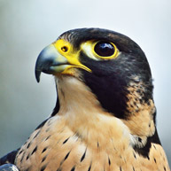
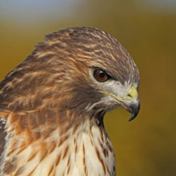

| AFRICAN ELEPHANT | ASIAN ELEPHANT |
|---|---|
|
|
| The name "African elephant" usually refers to the African bush elephant, or the African savanna elephant, who roams the grassland of 37 African countries | The Asian elephant, on the other hand, can be found throughout the Indian subcontinent and Southeast Asia |
| Sizes | |
| The African elephant is generally bigger. As the largest and heaviest land mammal on earth, the male African elephant is about 3.2 meters tall, weighing six tons on average. The largest specimen can reach a shoulder height of 3.96 meters. | The Asian elephant is smaller in size. Males are about 2.75 meters tall, weighing four tons. |
| Body Shapes | |
| The African elephant's back is concave,The African elephant has much larger ears similar to the African continent. | the Asian elephant's back is convex. Besides, they have different ear shapes, the Asian elephant has smaller, rounder ears. |
| Tusks | |
| Both male and female African elephants have tusks. The magnificent tusks can be very long and quite spectacular. The longest known tusk of an African bush elephant measured 3.51 meters and weighed 117 kg. | only male Asian elephants have tusks, and they are called "tuskers." The tuskers are much shorter and lighter than those from their African cousins. |
| KING COPRA | VIPER SNAKE |
|---|---|
 |
 |
| The king cobra is the largest venomous snake in the world. Special muscles and ribs in its neck spread out to form a "hood" when the cobra feels threatened. This makes the snake look bigger than it really is and may help scare predators away. King cobras make a deep, loud hiss, a warning signal that can be heard from a distance. The message is: "I am big, bad, and will bite you if you come any closer!" Most cobras are known to protect their eggs after laying them, but the female king cobra does even more. She uses her body and head to move leaves around to build a nest. After she lays her eggs, she covers them with more leaves and stays on top of the nest until the eggs hatch. Look for our king cobras, as well as other cobra species, in the Zoo’s popular Reptile House. | Mang Mountain pit vipers are strikingly beautiful snakes with green scales to help them blend into their bamboo habitat. Native to China, their green and brown coloring is perfect camouflage for moving around a forest floor, and if the snakes stay still, they seem to vanish! See if YOU can find them. The winters in this viper’s habitat have many days of freezing temperatures. As colder days approach, Mang Mountain pit vipers crawl into caves and under rock ledges. Scientists have found that the snakes that go the deepest have the best chance of surviving until spring. Although their bite can deliver a deadly dose of venom, these snakes are shy most of the time. But a female guards her nest of eggs carefully and bites any creature that tries to steal them! |
| FALCON | HAWK |
|---|---|
|  |  |
| They are very adaptable and can adapt to any kind of habitat and can survive almost anywhere. They can survive on any terrain without breaking a sweat, be it desert, arctic, grasslands etc. It is like they were born for this. | Hawks are also very adaptable like the falcons when it comes to terrain. |
| species | |
| 40 species of Falcon exist all over the world. | There are more than 270 species of hawks in the world. |
| area | |
| Falcons are widely distributed on all continents of the world except Antarctica | North America, Central America, the West Indies, Jamaica. |
| The duel between Falcon vs. Hawk | |
| Falcons and hawks are quite similar by many factors but there are certain points that differentiate them. Hawks have a smoother beak when compared to falcons which are known to have angular bend beak which they use while killing their prey. | Hawks are slower prey birds when compared to falcons which are known for their speed. Hawks have their average size as an advantage over the Falcons. When it comes to competition it is really hard to guess who will win it as both of them are impeccable prey birds. |
@powered by moaz's team